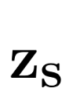
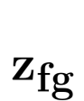

Eric-Tuan Le*
University College London
Edward Bartrum*
University College London, Alan Turing Institute
Iasonas Kokkinos
Snap research
* joint first authors
Disentangling Shape, Pose and Appearance through 3D Morphable Image and Geometry Generation
* joint first authors
We introduce StyleMorph, a 3D generative model that relies on the 3D morphable model paradigm to disentangle shape, pose, object and scene texture for high quality image synthesis. We represent 3D shape variability through 3D deformation fields with respect to a canonical object template.Both the deformations and the template are expressed as implicit networks and learned in an unsupervised manner only from 2D image supervision. We connect 3D morphable modelling with deferred neural rendering by performing an implicit surface rendering of ``Template Object Coordinates'' (TOCS), thereby constructing a purely geometric, deformation-equivariant 2D signal that reflects the compounded geometric effects of non-rigid shape, pose, and perspective projection. We use TOCS maps in tandem with object and background appearance codes to condition a StyleGAN-based deferred neural rendering (DNR) network for high-resolution image synthesis. We show competitive photorrealistic image synthesis results on 4 datasets (FFHQ faces, AFHQ Cats, Dogs, Wild), while achieving the joint disentanglement of shape, pose, object and scene texture.
We model canonical shape as a signed distance function in template space, and warp it using a non-rigid shape deformation . We render template coordinates using camera pose (φ, θ), and perspective projection, to produce a rendered 2D Template Object Coordinate System (TOCS). The 2D TOCS maps are passed into a Deferred Neural Rendering network together with latent codes for foreground and background appearance (, ) to produce high-resolution photorrealistic images trained by a discriminator network.
Drag the slider to reveal the TOCS maps underlying our image synthesis
Our image synthesis model allows independent control over foreground, background, shape and pose.
"@article{CitekeyArticle,
author="TBC",
title="TBC",
journal="TBC",
year=2022
}"